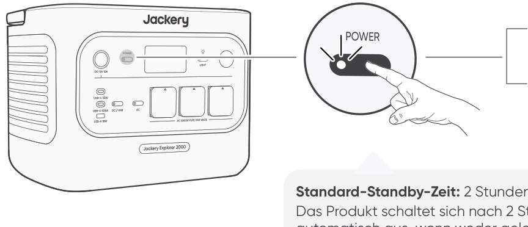
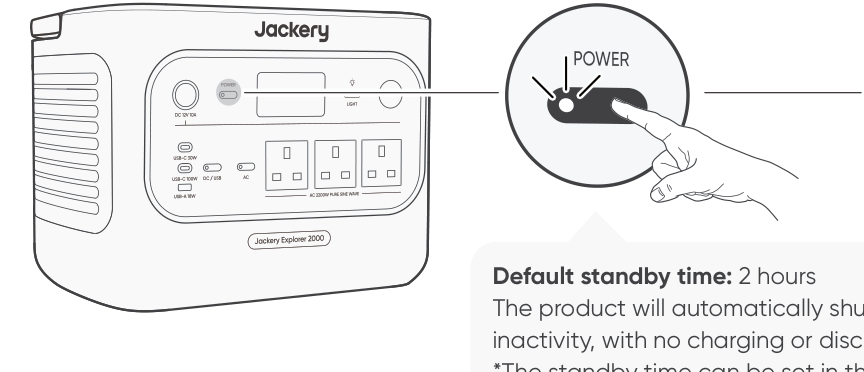
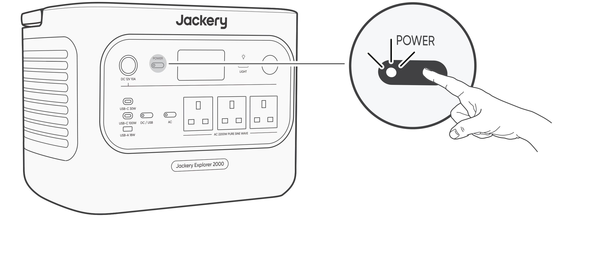
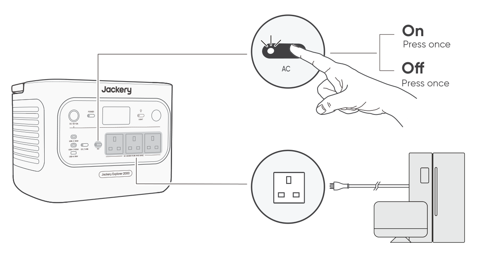
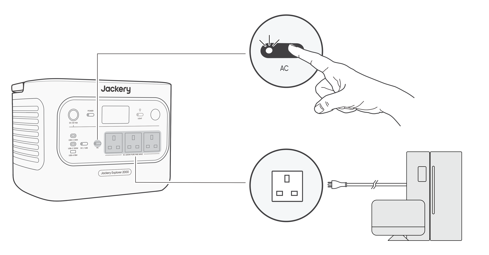
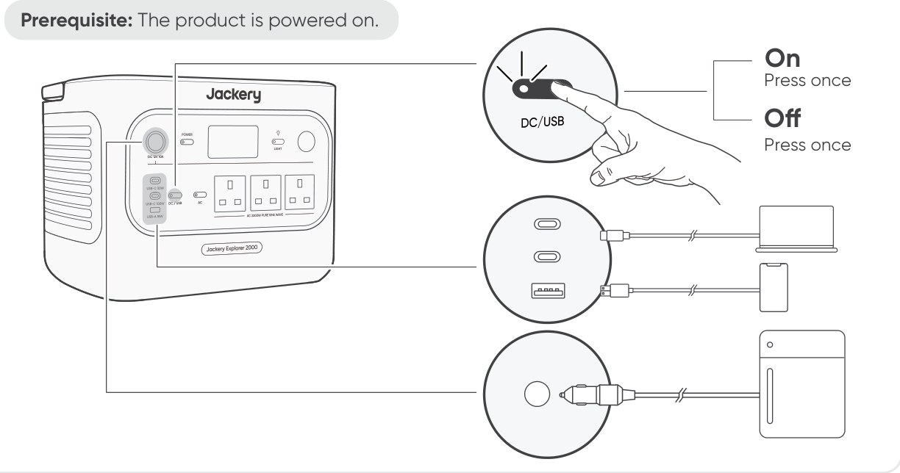
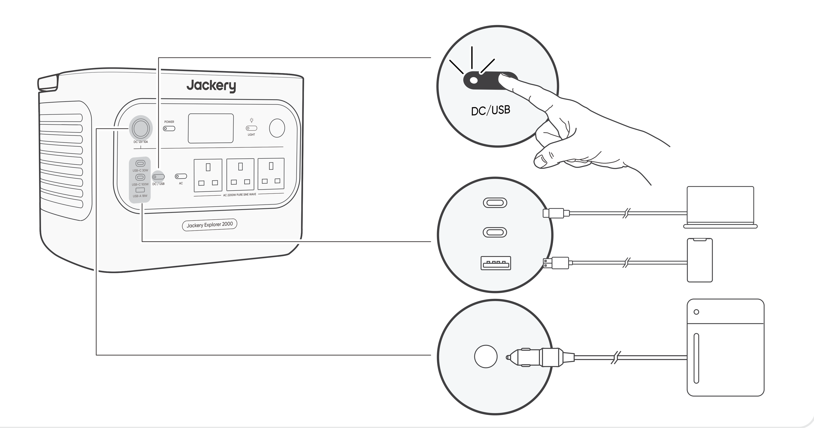
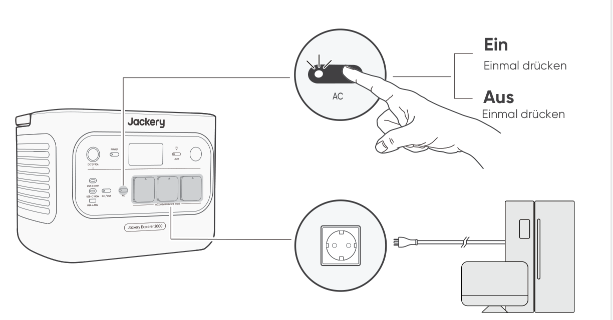
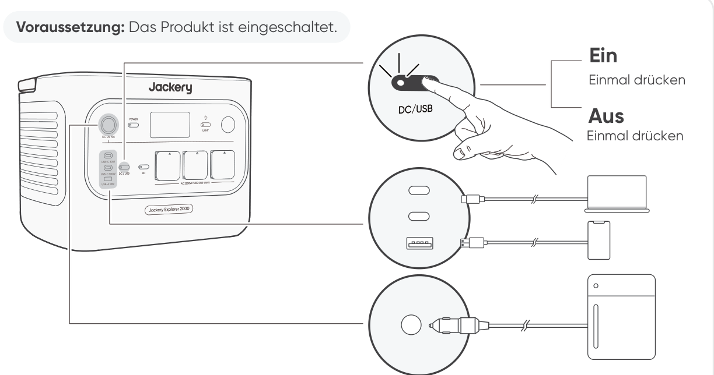

DE POWER
PDF page 59; crop [34.0, 82.0, 250.0, 175.0]; candidate SHA-256 4307b2bbcda7f933d35713a1c66e0dda1d4ebbd69bdfe6a9d33fe366ee7fc3db


Source: approved EU/UK V2.0 PDF (SHA-256 6b4af85236ccfee0f4d24ad55ee8b24684d023982b5da216023d4f716f183f3d). Candidate images remain quarantined and unbound.
PDF page 11; crop [34.0, 82.0, 250.0, 175.0]; candidate SHA-256 3dcd31b33a077179fb5f0fa452a2d2d07178c974611be89a3c4e3affe944be12


PDF page 11; crop [34.0, 290.0, 340.0, 450.0]; candidate SHA-256 e605d4e1634666ec9e0dd0b7719809160584b92c193f92b9509ed126fc98e6f9


PDF page 12; crop [34.0, 50.0, 340.0, 211.0]; candidate SHA-256 503a5f9a81cf4e8a4223134793147d9ddabbd033490ac5f6eb7c249351c7b8fa


PDF page 59; crop [34.0, 82.0, 250.0, 175.0]; candidate SHA-256 4307b2bbcda7f933d35713a1c66e0dda1d4ebbd69bdfe6a9d33fe366ee7fc3db

PDF page 59; crop [34.0, 290.0, 340.0, 450.0]; candidate SHA-256 68ebc82bf7234f0060bb650c2bb503853abee26331655e250224ed11cc1a32c4


PDF page 60; crop [34.0, 50.0, 340.0, 211.0]; candidate SHA-256 d82b7582b8b9b0fe392f7a2903e5babb5239dd397667624bf563a4d41aaa8fa4
